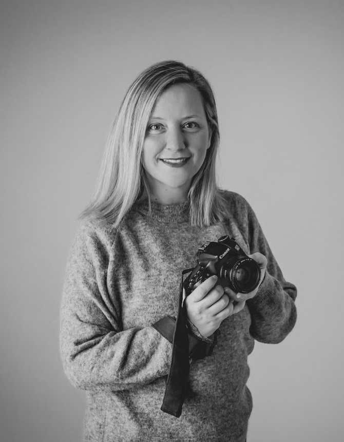

<div class="container">
  <div class="row">
    <div class="imagen col md-6">
      
    </div>
    <div class="col md-6 texto">
      <p>
        ¡Hola! Soy Noelia y desde siempre me ha encantado dormir bebés y estar
        rodeada de niños, ¡¡me entiendo muy bien con ellos!! Cuando estudiaba en
        la universidad, pude realizar un año de Erasmus a Milano para estudiar
        diseño de moda y durante ese periodo descubrí que mi verdadera pasión
        sería la fotografía.Así que uní las dos cosas y aquí estoy.
      </p>

      <p>
        La formación es muy importante, así que empecé a hacer Workshops
        presenciales y muchos cursos online para poder dar el 100% de mi y poder
        especializarme en Fotografía Newborn e infantil.
      </p>

      <p>
        Soy una persona sensible y divertida, que además adora el arte e intento
        que mis fotografías lo reflejen, buscando naturalidad y un recuerdo
        atemporal y diferente. Que cada sesión sea única donde disfrutéis y sean
        naturales como vosotros.
      </p>

      <p>
        Adoro conoceros y poner también un poquito de vosotros en todas mis
        sesiones, y esa combinación nos deja unos recuerdos muy personales y
        auténticos para siempre, además de acompañaros en los momentos más
        felices de vuestras vidas y poder plasmarlos para siempre y para
        vosotros.
      </p>
    </div>
  </div>
</div>
